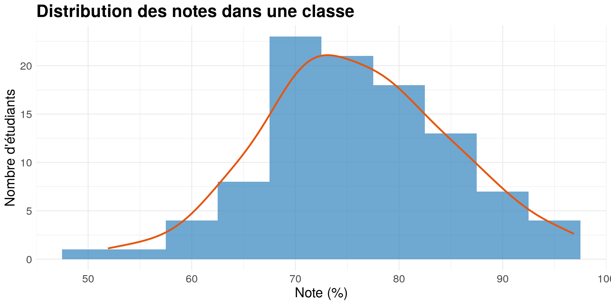
Les mesures et les analyses statistiques
Introduction aux mégadonnées en sciences sociales
Laurence-Olivier M. Foisy
Université de Montréal
Retour sur le Quiz 1
Questions
- Trop facile?
- Combien d’heures ça vous a pris?
- Comprenez vous la structure du code?
1_,2_,3_? - Comprenez vous la fonction
source()? - Regarder sur GitHub pour voir si votre commit a bien été push
- Utiliser le terminal de Positron
- Ouvrir les pdf directement dans Positron
- Activer la sauvegarde automatique
- Activer la mini-map pour naviguer dans les fichiers
Votre gabarit Quarto
Structure du cours
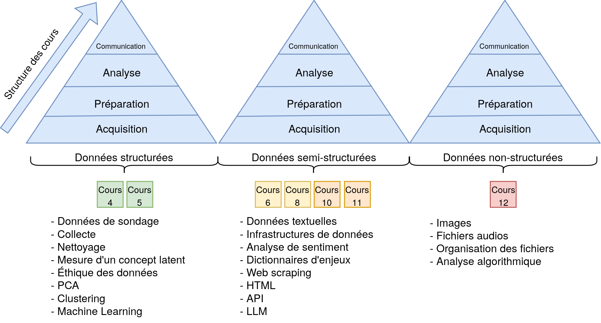

Cours 5
Le problème : On veut étudier des choses invisibles (concepts).
La solution : Construire des échelles de mesure
La vérification : Est-ce que mon échelle est fiable et valide?
L’application : Maintenant que j’ai mesuré mon concept, comment il interagit avec le monde ? (Visualisation -> Régression).
Les variables latentes
Introduction
Qu’est-ce qu’une variable latente?
- Une caractéristique qui ne peut pas être mesurée directement
- Idéologie politique
- Le support à l’environnement
- L’intelligence
- Doit être inférée à partir d’autres variables observables
- Concept central en sciences sociales
Exemple : Mesurer l’intelligence

Défi de mesure
Pourquoi c’est complexe?
- Abstraction : Les concepts sont souvent abstraits
- Multidimensionnalité : Plusieurs aspects à considérer
- Subjectivité : Interprétation variable selon le contexte
Échelle de mesure
échelle de l’attitude politique

échelle de l’attitude politique

échelle de l’attitude politique

échelle de l’attitude politique

L’échelle d’idéologie de Merkley (2022)

Les 8 questions de l’étude (Merkley, 2022)

Concept latent : Rednecks
- Est-ce que l’éducation influence la probabilité d’être un “redneck”?
- Aucune question ne demande directement si quelqu’un est un “redneck”
- Mais on peut inférer ce statut à partir d’autres variables
- Créer une variable de “redneckitude”
Solution : Les échelles de mesure
Comment procéder?
- Identifier les dimensions clés
- Décomposer le concept
- Définir les aspects mesurables
- Créer des indicateurs
- Questions précises
- Observations concrètes
- Valider l’échelle
- Fiabilité : Tests statistiques
- Validité : Théorique

Hipster?
TikTok brain?
Confiance envers le gouvernement?
Évaluation de la qualité
Critères essentiels

Critères essentiels

Critères essentiels

Fiabilité : Mesure Statistique
Analyse factorielle
- Détecte automatiquement ces anomalies
- Vérifie si toutes les questions mesurent la même compétence
- Aide à améliorer la qualité des examens
- Guide la révision des questions problématiques
L’examen d’histoire
Dans une classe typique…
L’examen d’histoire : 5 questions
Notre hypothèse
- Chaque question mesure la compétence en histoire
- Les bons élèves devraient bien répondre
- Les élèves moyens répondront moyennement bien
- Les élèves en difficulté auront plus de mal
Distribution typique d’un examen
Distribution typique d’un examen
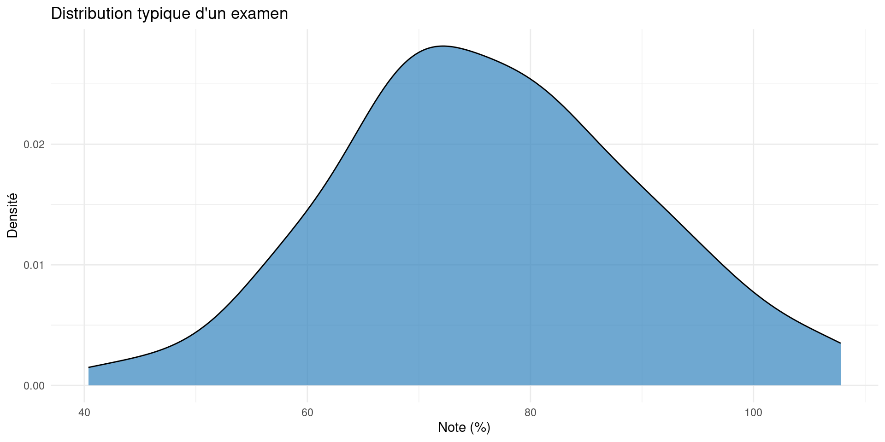
Distribution par groupes d’élèves
Question 1 : Causes de la guerre
“Quels événements ont directement mené au déclenchement de la Seconde Guerre Mondiale en Europe?”
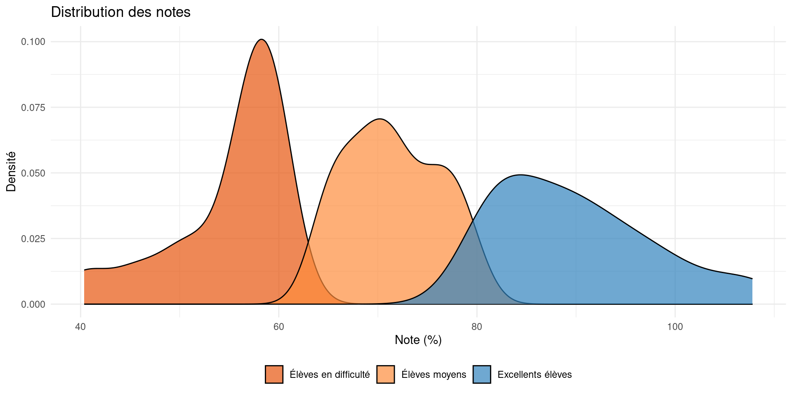Question 2 : Analyse stratégique
“Expliquez pourquoi l’opération Barbarossa a été un tournant décisif dans la guerre.”
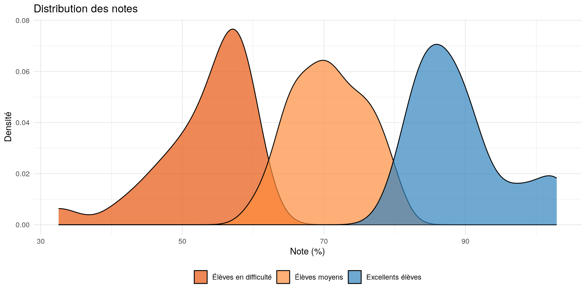Question 3 : Impact économique
“Analysez comment la mobilisation industrielle des États-Unis a influencé l’issue de la guerre.”
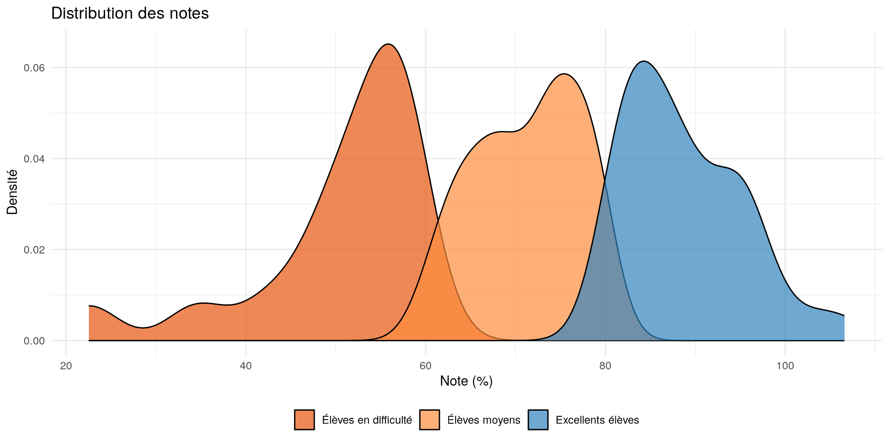Question 4 : Conséquences géopolitiques
“Évaluez comment les accord de Yalta ont redessiné la carte politique de l’Europe.”
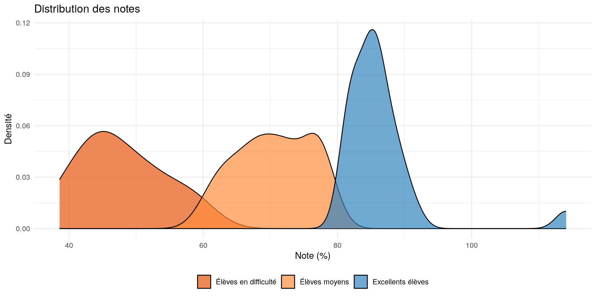Question 5 : Cigares de Churchill
“Quelle était la marque de cigares préférée de Winston Churchill?”
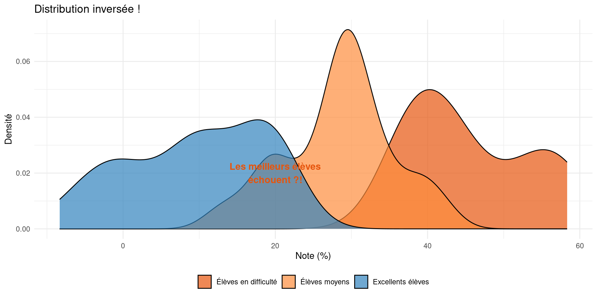Une question suspecte
Cette question mesure-t-elle vraiment la compétence en histoire?
Ou mesure-t-elle autre chose?
- Culture populaire?
- Connaissance des cigares?
Ce qui cloche
- Les meilleurs élèves échouent mystérieusement
- Les élèves en difficulté excellent soudainement
- La question ne mesure pas la compétence en histoire
L’analyse factorielle compare toutes les questions
En résumé
Une bonne question d’histoire devrait:
- Tester la compréhension historique
- Montrer une distribution “normale”
- Discriminer selon la compétence
Une question problématique peut:
- Tester des connaissances non pertinentes
- Montrer une distribution inversée
- Ne pas refléter la compétence visée
Analyse factorielle
Trois mesures statistiques
- Alpha de Cronbach
- Première valeur propre (Eigenvalue)
- Coefficient de saturation (Factor loading)
L’Alpha de Cronbach
Qu’est-ce que c’est?
- Une mesure de la cohérence interne d’un ensemble de questions
- Indique si les questions mesurent bien la même chose
- Varie entre 0 et 1 (plus c’est proche de 1, meilleur c’est)
Exemple Simple
- Imaginons un questionnaire sur la satisfaction au travail avec 4 questions :
- “J’aime mon travail”
- “Je suis heureux au bureau”
- “Mon travail me satisfait”
- “Je m’épanouis dans mon travail”
- Si les réponses sont cohérentes entre elles → Alpha élevé
- Si les réponses sont contradictoires → Alpha faible
En pratique
- Alpha > 0.6 : Acceptable
- Alpha > 0.7 : Bon
- Alpha > 0.8 : Excellent
La Première Valeur Propre (First Eigenvalue)
Qu’est-ce que c’est?
- Indique la force du concept principal mesuré par vos questions
- Plus elle est élevée, plus vos questions mesurent un concept unique et fort
Analogie Simple
5 questions pour mesurer les habitudes de vie saines
- “Je ne mange jamais de sucre raffiné”
- “Je privilégie les produits biologiques”
- “Je vais au gym 4 fois par semaine”
- “Je prends des suppléments de protéines”
- “Je possède une montre intelligente pour suivre mon cardio”
En pratique
- Valeur > 1 : Acceptable
- Plus la valeur est élevée, plus c’est fiable
- Indique qu’il y a un “facteur dominant” dans vos questions
Le Coefficient de Saturation(Factor Loading)
Qu’est-ce que c’est?
- Mesure la contribution de chaque question au concept général
- Indique si chaque question est pertinente
Exemple Simple
- Pour un questionnaire sur “l’amour des chats” :
- “Les chats sont doux” → Fort coefficient (pertinent)
- “Je mange des pâtes” → Faible coefficient (non pertinent)
En pratique
- Coefficient > 0.3 : Acceptable
- Permet d’identifier les questions à garder ou à supprimer
- Plus le coefficient est élevé, plus la question est pertinente
En Résumé
Les trois mesures travaillent ensemble
- Alpha de Cronbach : Cohérence globale
- Première valeur propre : Force du concept principal
- Coefficient de saturation : Pertinence de chaque question
Utilisation pratique
- Alpha de Cronbach : > 0.6
- Première valeur propre (Eigenvalue) : > 1
- Coefficient de saturation (Factor loading) : > 0.3
Comment faire
1. Installer le package sondr
Comment faire ?
2. Charger vos données
3. Déterminer les variables potentielles
r$> names(df)
[1] "ses_gender" "ses_income" "ses_housing" "ses_language"
[5] "ses_religion" "ses_education" "ses_ethnicity" "ses_immigrant"
[9] "ses_skin_tone" "lifestyle_pets" "lifestyle_album" "lifestyle_movie"
[13] "lifestyle_prius" "ses_postal_code" "lifestyle_coffee" "lifestyle_gpt_freq"
[17] "lifestyle_transport" "lifestyle_yoga_freq" "lifestyle_guns_number" "lifestyle_classic_meal"
[21] "lifestyle_fishing_freq" "lifestyle_hunting_freq" "ses_sexual_orientation" "lifestyle_eat_meat_freq"
[25] "lifestyle_clothing_style" "lifestyle_motorized_freq" "lifestyle_videogame_freq" "lifestyle_alcohol_favorite"
[29] "ses_religiosity_importance" "lifestyle_nonmotorized_freq" "lifestyle_watch_soccer_freq" "lifestyle_movie_barbenheimer"
[33] "lifestyle_watch_baseball_freq" "lifestyle_volunteeringsocial_freq"Comment faire ?
4. Cleaner les variables à évaluer pour qu’elles soient numériques
df_clean <- data.frame(id = 1:nrow(df))
# Variable de fréquence de pêche
table(df$lifestyle_fishing_freq)
df_clean$lifestyle_fishing_freq_scale<- NA
df_clean$lifestyle_fishing_freq_scale[df$lifestyle_fishing_freq == "Never"] <- 0
df_clean$lifestyle_fishing_freq_scale[df$lifestyle_fishing_freq == "Almost never"] <- 0.25
df_clean$lifestyle_fishing_freq_scale[df$lifestyle_fishing_freq == "Sometimes"] <- 0.5
df_clean$lifestyle_fishing_freq_scale[df$lifestyle_fishing_freq == "Often"] <- 0.75
df_clean$lifestyle_fishing_freq_scale[df$lifestyle_fishing_freq == " Very often"] <- 1
table(df_clean$lifestyle_fishing_freq_scale, useNA = "ifany")
saveRDS(df_clean, "data_clean.rds")Comment faire ?
5. Isoler les variables à évaluer
6. Conditions à respecter
- Un dataframe contenant uniquement les variables à évaluer
- AUCUNE valeur manquante
- La même échelle de mesure pour toutes les questionc (0-1)
- La même orientation pour tous les items (positif ou négatif)
Comment faire ?
Comment faire ?
La validité?
Comment la mesurer?
- Concordance avec la théorie
- Les questions mesurent-elles bien le concept?
- Les résultats sont-ils cohérents avec la littérature?
- Concordance avec d’autres mesures
- Les résultats sont-ils similaires à d’autres échelles?
- Les résultats sont-ils stables dans le temps?
Faire l’échelle
Si la fiabilité et la validité sont acceptables
df$scale_redneck
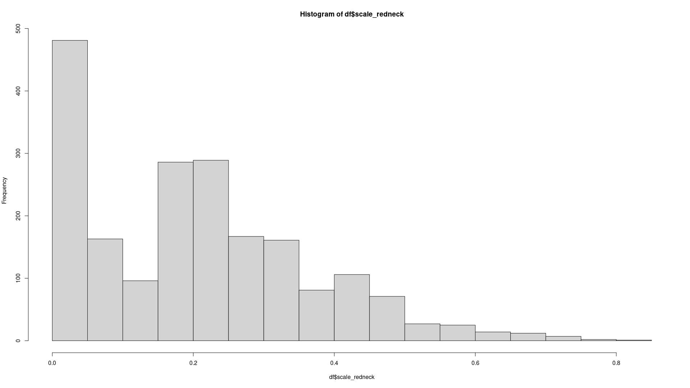Conclusion
- Les variables latentes sont omniprésentes en sciences sociales
- La mesure nécessite une approche systématique
- La validation est cruciale pour la qualité
La grammaire des graphiques
Représentation graphique des données
Principes généraux de la visualisation
Visualiser des données
Éviter les distractions inutiles
Éviter les graphiques « spaghetti »
Évitez les lignes trop complexes qui se chevauchent et s’entremêlent
Commencer en noir et blanc et utiliser les couleurs de manière efficace
Visualisation avec ggplot2
Initialiser un graphique
dfest le dataframeaes()est la fonction qui permet de spécifier les variables à utiliserxetysont les variables à utiliser pour les axes x et ycolorest la variable à utiliser pour la couleur
Visualisation avec ggplot2
Ajouter un geom_()
- Il existe plusieurs
geom_()pour différents types de graphiquesgeom_point()pour un nuage de pointsgeom_line()pour un graphique linéairegeom_bar()pour un graphique à barresgeom_histogram()pour un histogramme
Visualisation avec ggplot2
Ajouter une échelle de couleur
scale_color_gradient()permet de spécifier les couleurs pour la variableEducationlowethighsont les couleurs pour les valeurs les plus basses et les plus hautesnameest le nom de la légende- Vous pouvez utiliser les hexcodes pour les couleurs
Visualisation avec ggplot2
Ajouter des titres et des labels
ggplot(df, aes(x = Agriculture, y = Fertility, color = Education)) +
geom_point(alpha = 0.8) + # Le alpha est la transparence
scale_color_gradient(low = "blue", high = "red", name = "Éducation") +
labs(
title = "Relation entre l'agriculture et la fertilité en Suisse",
x = "Pourcentage d'agriculture",
y = "Fertilité"
) Visualisation avec ggplot2
Ajouter un thème
ggplot(df, aes(x = Agriculture, y = Fertility, color = Education)) +
geom_point(alpha = 0.8) + # Le alpha est la transparence
scale_color_gradient(low = "blue", high = "red", name = "Éducation") +
labs(
title = "Relation entre l'agriculture et la fertilité en Suisse",
x = "Pourcentage d'agriculture",
y = "Fertilité"
) +
theme_minimal()theme_minimal()est un thème minimaliste- Il existe plusieurs thèmes prédéfinis dans ggplot2
- Vous pouvez aussi créer votre propre thème
Visualisation avec ggplot2
Sauvegarder le graphique
ggplot(df, aes(x = Agriculture, y = Fertility, color = Education)) +
geom_point(alpha = 0.8) + # Le alpha est la transparence
scale_color_gradient(low = "blue", high = "red", name = "Éducation") +
labs(
title = "Relation entre l'agriculture et la fertilité en Suisse",
x = "Pourcentage d'agriculture",
y = "Fertilité"
) +
theme_minimal()
ggsave("nom_du_graphique.png", width = 10, height = 6)- Vous pouvez spécifier le format du graphique (png, pdf, etc.) ainsi que le chemin pour sauvegarder le graphique
Visualisation avec ggplot2
Un histogramme de la variable Fertility
Les composants de base

Structure d’un graphique ggplot2
Types de graphiques fondamentaux
L’histogramme
Le graphique en barres
Le nuage de points
Personnalisation
Les couleurs
Les thèmes
# Thème minimal
ggplot(data, aes(x = age, y = revenu)) +
geom_point() +
theme_minimal()
# Thème personnalisé
ggplot(data, aes(x = age, y = revenu)) +
geom_point() +
theme_minimal() +
theme(
plot.title = element_text(size = 16, face = "bold"),
axis.title = element_text(size = 12),
legend.position = "bottom"
)Graphiques avancés
Facettes
Combinaison de géométries
Points clés à retenir
- ggplot2 utilise une grammaire des graphiques cohérente
- Construire les graphiques couche par couche
- La personnalisation est puissante mais simple
- Toujours penser à la lisibilité
Regression linéaire
\[ \begin{aligned} y &= \beta_0 + \beta_1x + \epsilon \\ \end{aligned} \]
Qu’est-ce que c’est?
- Un outil pour comprendre la relation entre deux variables
- Permet de prédire une variable à partir d’une autre
- Trouve la “meilleure ligne” qui représente cette relation
Visualisation de la régression
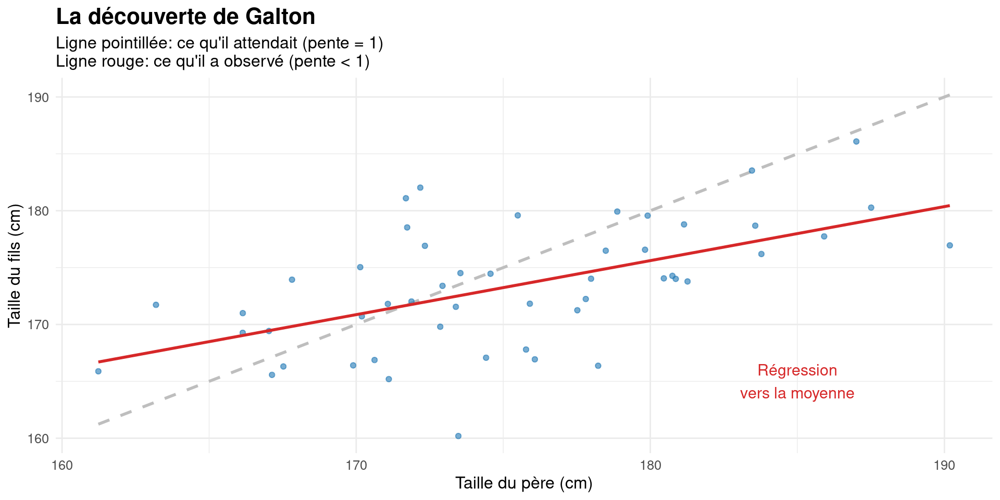Comment ça marche?
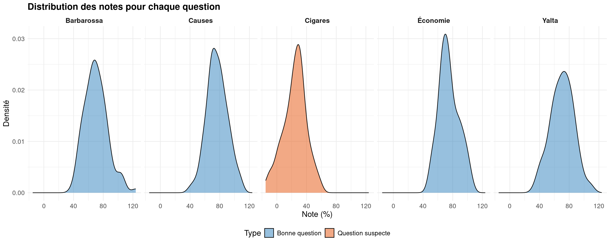Comment ça marche?
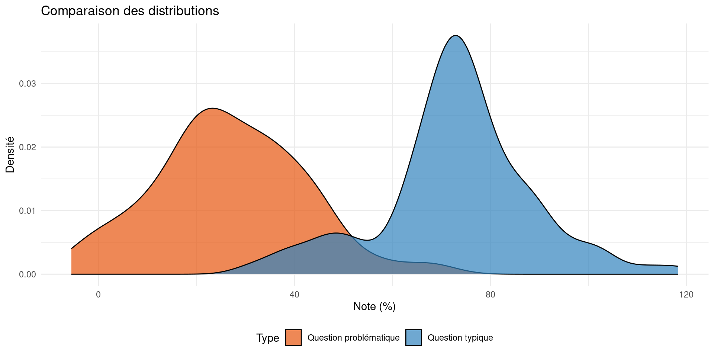Comment ça marche?
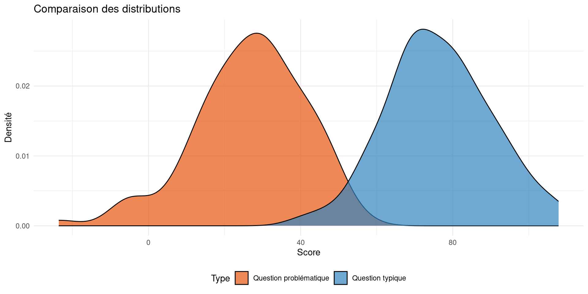Pourquoi utiliser la régression?
- Comprendre les relations entre variables
- Prédire des valeurs futures
- Tester des hypothèses scientifiques
- Contrôler pour plusieurs facteurs à la fois
Régression
Points clés à retenir
- Toujours explorer vos données avant l’analyse
- Interpréter les résultats avec prudence
- Visualiser pour mieux comprendre
Comment ça marche?
L’analyse factorielle vérifie
Nos résultats